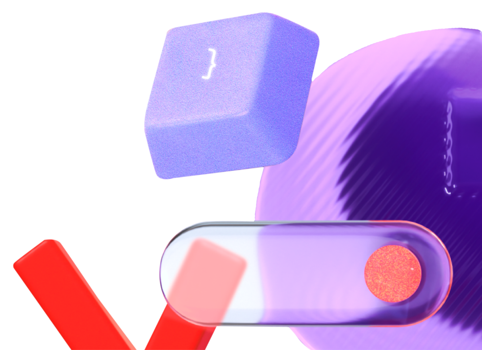
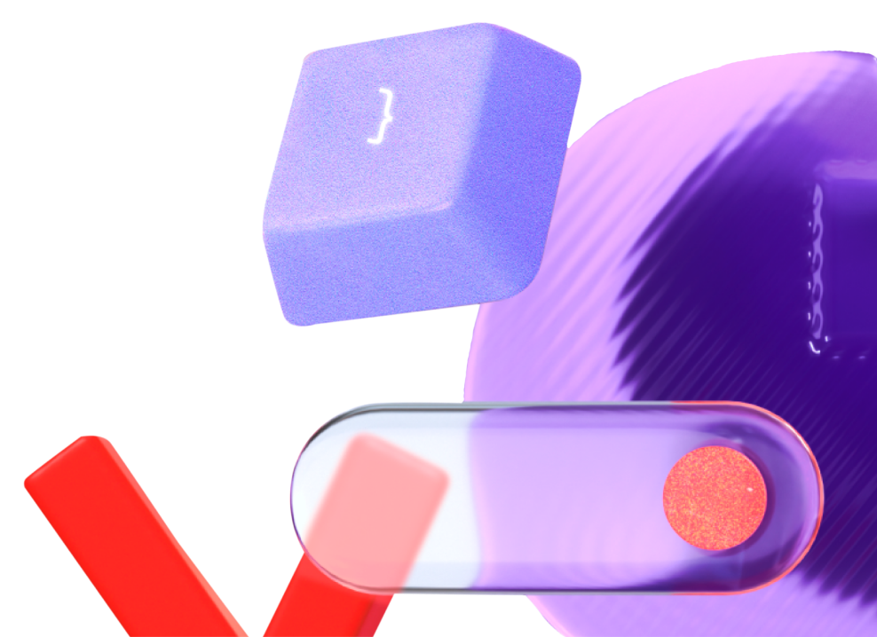

|
|
|
Завтрак |
| 10.00 - 10.05 |
|
АНДРЕЙ БЕЛОВ, директор Филиала МТС в Нижегородской области
Welcome-приветствие |
| 10.05 - 10.20 |
|
Представление всей команды PR-функции экосистемы МТС |
| 10.20 - 11.15 |
|
ТАРАС КОЗАЧОК, директор Департамента комплексного анализа и планирования БРЭМ
Стратегия развития экосистемы МТС: принципы и вызовы в среднесрочной перспективе
Ответы на вопросы аудитории
|
| 11.15 – 11.25 |
|
Кофе-брейк |
| 11.25 - 12.30 |
|
АРСЕНИЙ ПАЛАГИН, Директор по внешним коммуникациям и связям с общественностью
Коммуникационная стратегия МТС – цели, задачи, КПЭ, фокусы и приоритеты на 2025 г
Ответы на вопросы аудитории |
| 12.30 - 13.15 |
|
МАРИЯ ШАКАЛО, директор по персоналу, HR бизнес-партнер БРЭМ
Портрет PR-специалиста МТС
Ответы на вопросы аудитории |
| 13.15 – 14.00 |
|
Обед |
| 14.00 – 14.45 |
|
ДМИТРИЙ ПОЛУНИН, ДАРЬЯ ПЛАКСИНА
Работа с мониторинговыми системами, подготовка отчетности по КПЭ (чем отчитываемся, как рассчитываются КПЭ, что в работе мониторинговых систем нужно учитывать PR-специалистам при планировании паблисити по своему направлению)
Ответы на вопросы аудитории |
| 14.45 – 16.15 |
|
Представитель Интерфакс
Давтян Татьяна, Группа мониторинга МТС
Обучающий семинар |
| 16.15 – 16.30 |
|
Кофе-брейк |
| 16.30 - 17.45 |
|
АРСЕНИЙ ПАЛАГИН, Директор по внешним коммуникациям и связям с общественностью
ВОРОНОВА АНАСТАСИЯ, IR МТС
ЯРОЧЕВСКАЯ ЛУИЗА, МТС Банк
Как читать финансовую отчетность компании. Секреты успешного IPO.
Ответы на вопросы аудитории |
| 17.45 – 19.00 |
|
АНТОН ПОПОВИЧ, Группа управлениями рисками экономических ограничений и инсайда
ЕВГЕНИЯ ОЗЕРОВА, Департамент деловой этики и комплаенс
ОЛЬГА ЮРКОВА, руководитель Центра социальных и благотворительных программ МТС
Коммуникации и реализация PR и социальных проектов в условиях текущих санкционных и комплаенс рисков: на что обращать внимание
Ответы на вопросы аудитории |
| 20.00 |
|
Гала-ужин |
 
